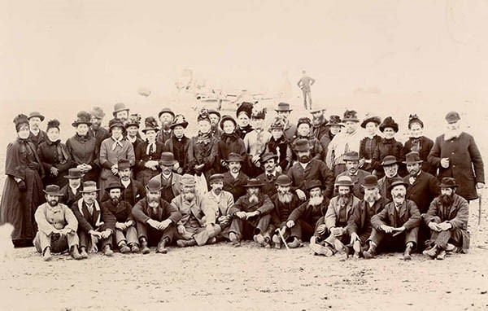

Un poco de historia...
Si hay una impronta cultural que se nota en la mayoría de las ciudades de Chubut, ella es la galesa. Mas aún, casi en ninguna otra provincia del país se han formado colonias tan grandes como en esta. Antes que los españoles y los italianos, los colonos de la europa galesa abrieron el terreno a la "civilización" en esta parte del mapa argentino, allá por 1865, buscando nuevos terrenos para poder trabajar. Claro que ellos no fueron los primeros habitantes de Chubut. Los indígenas tehuelches anduvieron durante siglos estos suelos cazando para poder vivir, mucho antes de la llegada del europeo. Fueron reducidos casi hasta la extinción durante la Campaña del Desierto del siglo XIX, pero aún así hoy conforman uno de los grupos indígenas más grandes de Argentina. Se los puede ver en reservas conservando sus costumbres, y a sus descendientes, que habitan toda la Patagonia.
Galeses en Chubut
El 28 de julio de 1865 desembarcaron en Golfo Nuevo, actualmente Puerto Madryn, 153 inmigrantes galeses. El contingente estaba compuesto por hombres, mujeres y niños que provenían de distintos condados de Gales. Llegaron a bordo de la nave Mimosa, trayendo consigo los elementos indispensables para formar su hogar en la nueva tierra y algunos elementos para realizar trabajos agrícolas. El clima y la geografía eran desconocidas para la mayoría del grupo. Al poco tiempo resultó indispensable la obtención de agua dulce. Así llegaron hasta la desembocadura del río que buscaban, el Chubut, entonces Chupat. Se instalaron en la margen norte del mismo y fundaron un pueblo -que luego sería capital de la provincia- al que llamaron Rawson, en honor al Dr. Guillermo Rawson, ministro del Interior del presidente B. Mitre, y quién tanto los había ayudado para se establecieran en la Patagonia. Los galeses buscaban una oportunidad y un lugar para practicar su fe, hablar su lengua, mantener sus tradiciones y ejercer plenamente sus derechos políticos. Aquí, en la Patagonia encontraron ese lugar y esa oportunidad. Por su parte, los colonos contribuyeron con su presencia a afianzar la Soberanía Argentina en el territorio en estas tierras que por entonces comenzaban a ser apetecidas y reclamadas.
Para solucionar el problema del riego construyeron canales, una de las primeras redes de riego artificial del país, y la zona comenzó a producir trigo en mayor escala. Como medio de favorecer la comercialización de los productos del valle hacia el norte del país, especialmente hacia Buenos Aires, se pensó en construir un ferrocarril que uniese el valle inferior con Puerto Madryn, punto de embarque. Así, en la segunda mitad del año 1886 comienza el tendido de las vías. Como consecuencia de ello, surge Trelew como punta de rieles y Puerto Madryn en el otro extremo. A partir de este momento se inicia una nueva etapa en la región, con el comienzo del poblamiento alrededor de esas estaciones de ferrocarril. Para entonces la colonia galesa contaba con una escuela, la primera en Rawson, un periódico, buenas viviendas, almacenes, graneros, molinos, se fabricaba queso y manteca para el consumo de la región, y Gaiman era el centro de mayor actividad productiva de la región.